03 / Identity / Editorial
BORA
A visual identity for a neighborhood focacceria, with a warm, playful voice that brings people together over handmade food.
Art direction · Visual identity · Applications

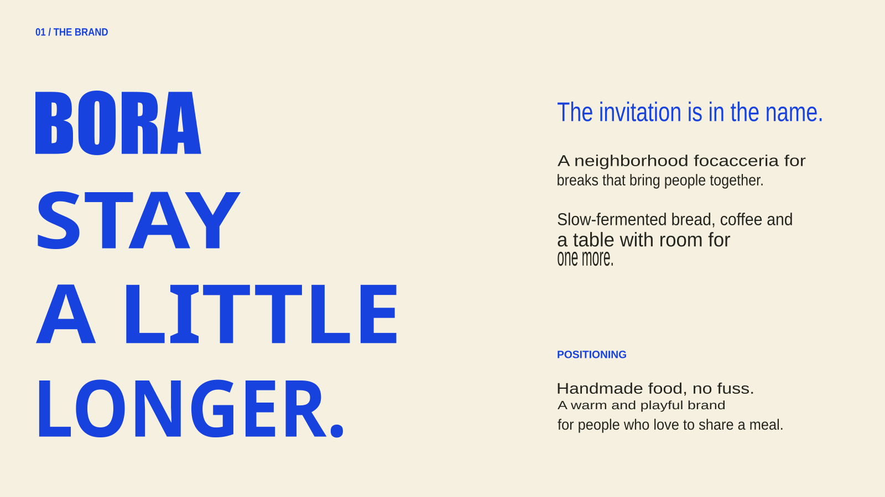
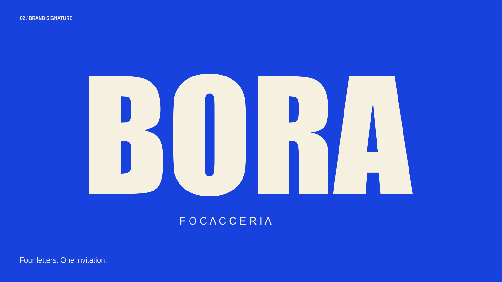
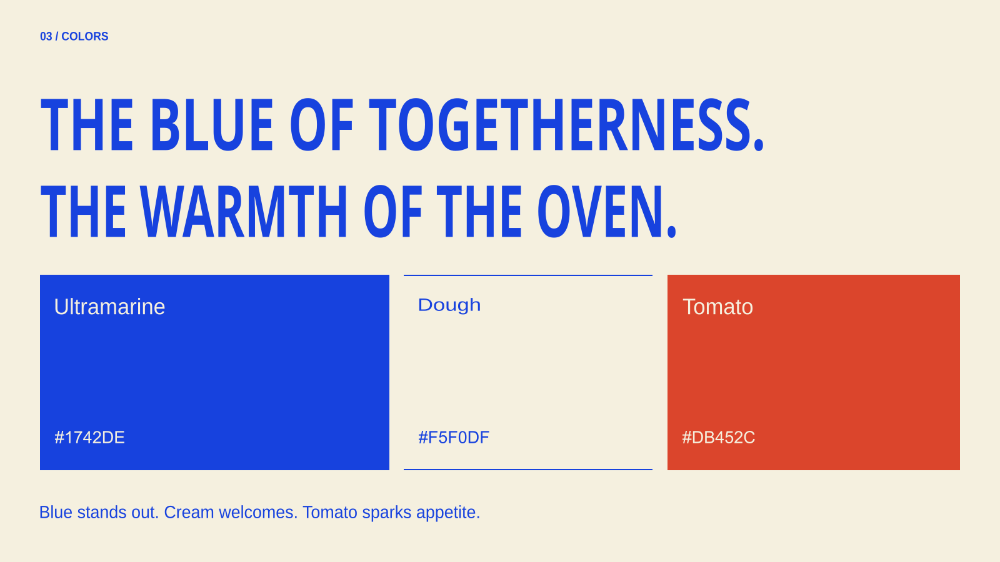
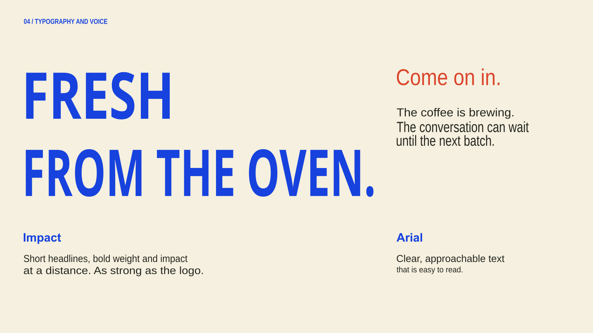
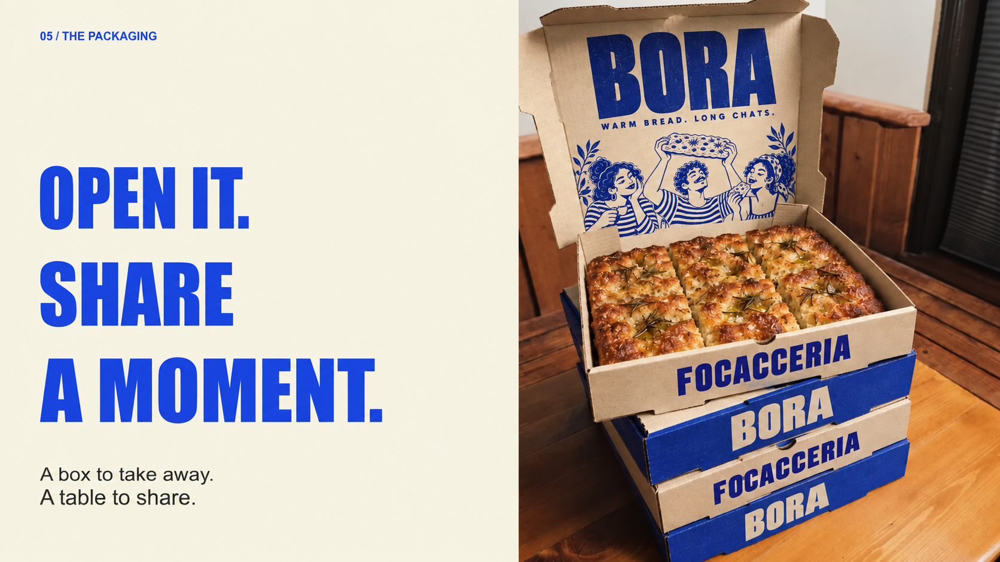
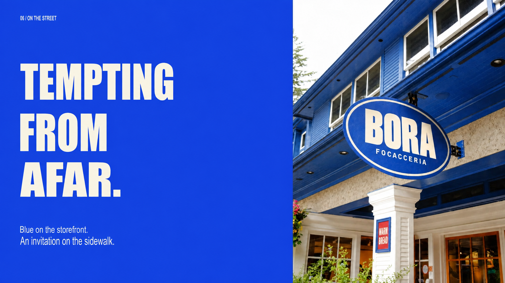
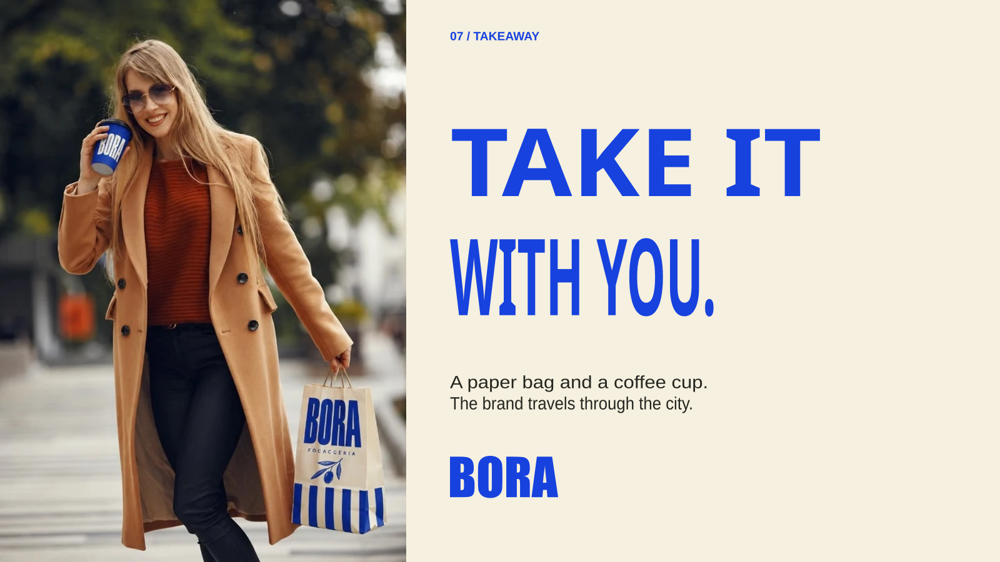
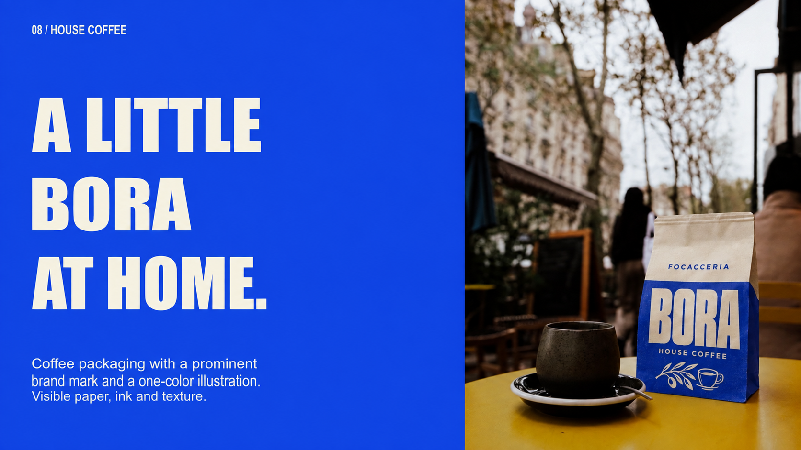
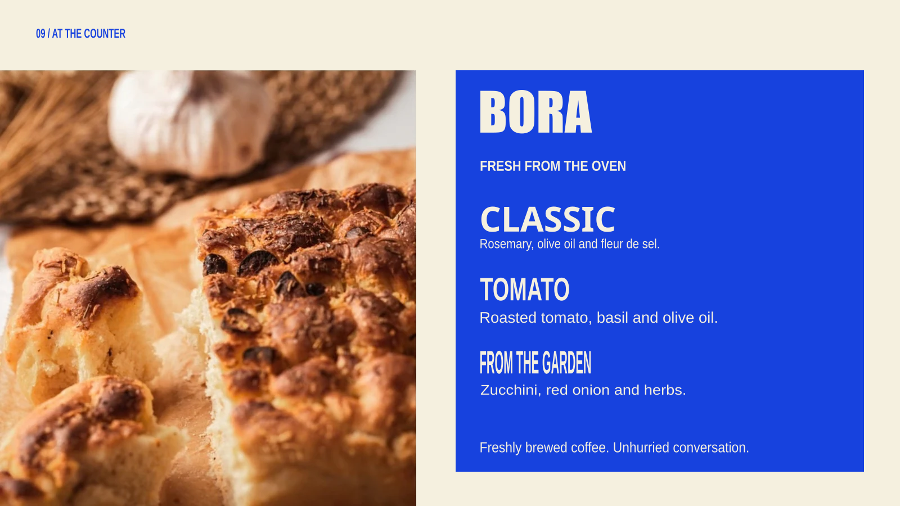
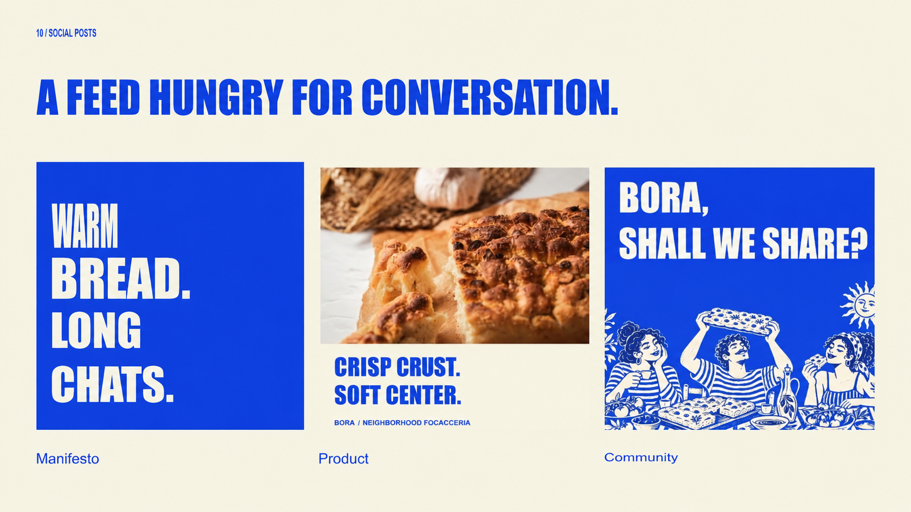
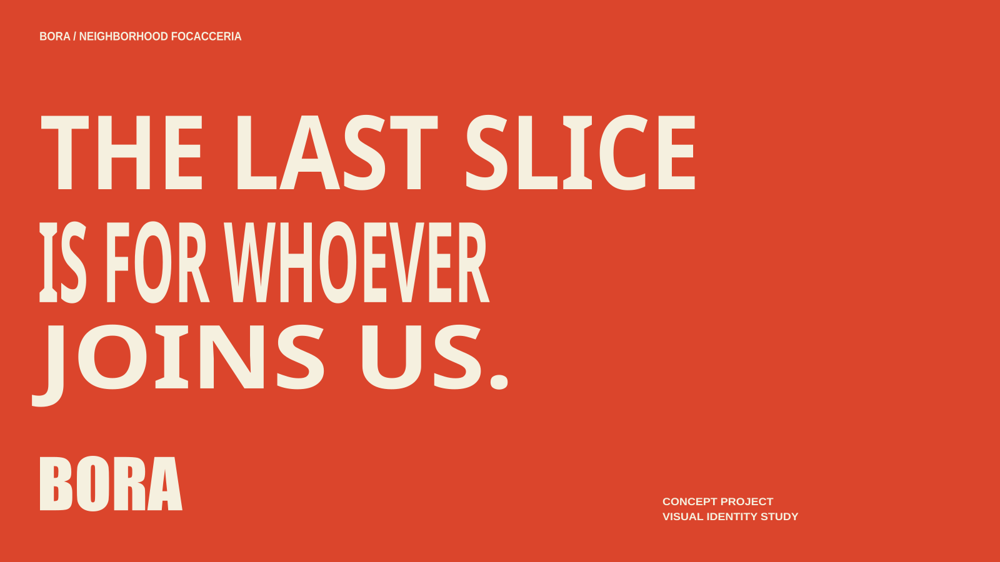